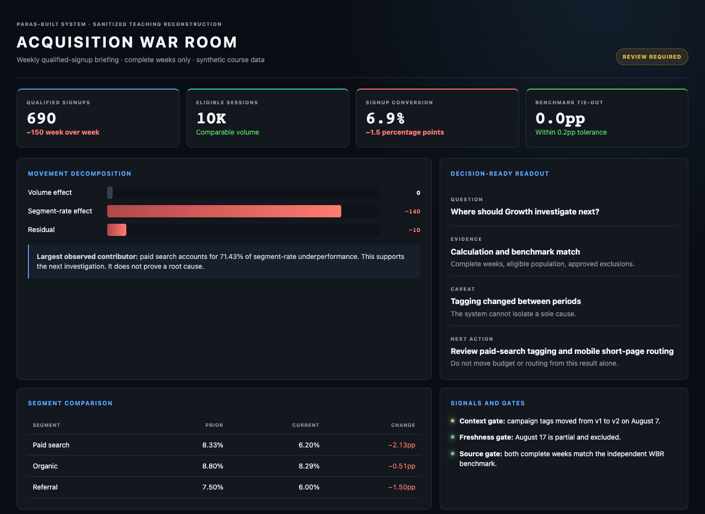
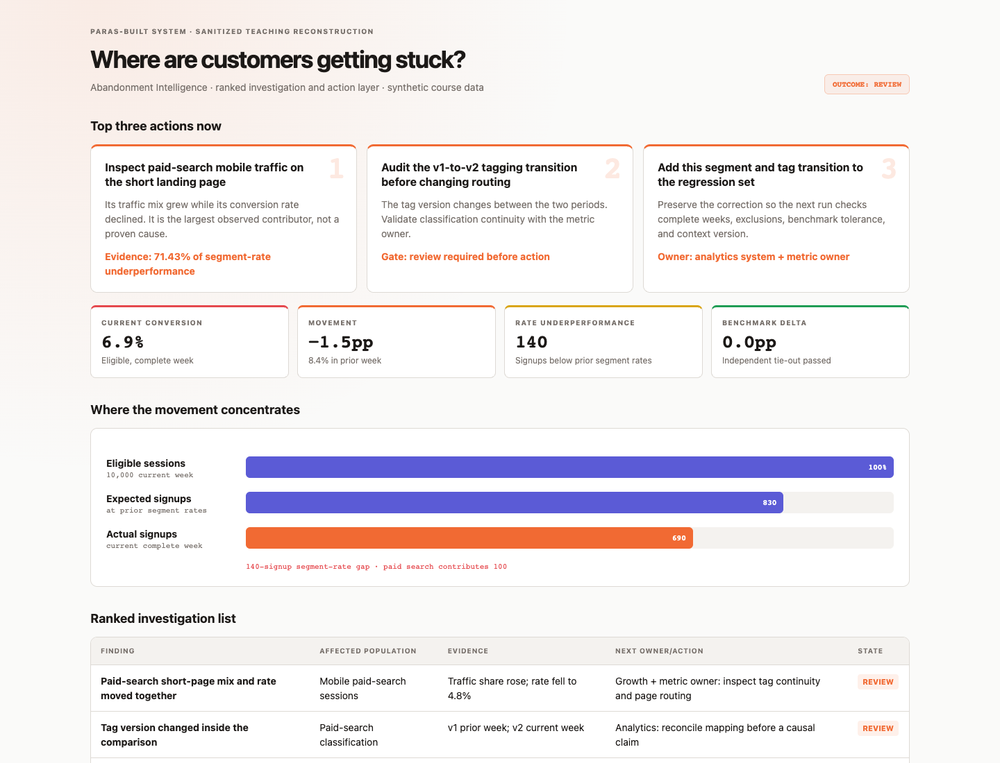

The production framework
Decision contract, approved context, scoped execution, validation, proof, review states, correction memory, and operations.
Start with the framework →Live workshop · course companion + workbook
Learn the production framework, see how I used it in systems I built, then practice the full path with your data or the included synthetic lab.
Each module moves through the same three views. I will teach the production pattern, show how that choice appeared in systems I built, and then give you a safe way to create the artifact yourself. If your warehouse is unavailable, the synthetic case keeps the third spine fully runnable.
Decision contract, approved context, scoped execution, validation, proof, review states, correction memory, and operations.
Start with the framework →Acquisition War Room, Abandonment Intelligence, and the conversational data-agent front door—shown with sanitized interfaces and honest evidence boundaries.
Open the case studies →Use an approved company source or run the same workflow on the included conversion lab. Every prompt produces a file you can take back to work.
Download the practice lab →Use Codex, Cursor, Claude Code, or the harness your team already trusts. The tool can change. These readiness checks do not.
The kit contains a calculation source, an independent benchmark, the metric definition, a known business change, trusted SQL, a dependency-free Python verifier, and ten eval cases. It works locally with any file-capable harness.
funnel_segments.csvcalculation sourcewbr_benchmark.csvindependent tie-outmetric.yamlmeaning + limitsverify.pyindependent checkanalysis.sqlDuckDB routeevals.yamlfailure cases8.4% → 6.9% (-1.5 percentage points). Paid search is the largest observed contributor; the current partial week is excluded; both complete weeks tie to the benchmark. The correct state for a causal “why” is Review because campaign tagging changed between periods.
Run python3 verify.py. A clean machine should need no package install.
AI Analyst implements this with setup state, an active dataset, a connection test, and session-start context loading. This workshop keeps the same sequence without requiring one specific coding tool.
“Your favorite harness does not decide whether the analysis is trustworthy. The active data, loaded context, permissions, and checks do.”
0–4 min: Ask students to open their preferred harness and one sanitized workspace. Do not spend class time comparing tools.
4–8 min: Students choose their safe source or download the workshop kit. Builders can check an MCP or warehouse connection; everyone can use the local files.
8–15 min: Run the readiness check: active source, visible tables or files, date range, one harmless read, and explicit access boundary.
15–20 min: Load the minimum business context, inspect work/00_readiness.md, and repair one missing item before moving on.
A connector shown in settings is not enough. Record what the agent successfully read in this session.
Saved locally on this device
Course sequence adapted from AI Analyst’s MIT-licensed setup guide, first-run routing, data connection, and knowledge bootstrap. AI Analyst uses Claude Code; the workshop readiness check is intentionally tool-neutral.
The course alternates between a short walkthrough, a worked example, and build time in your own harness. Two breaks and 30 protected minutes for questions are included in the five hours.
Use a sanitized local extract or an approved read-only warehouse route. Run the same staged prompts and keep sensitive data, credentials, and proprietary SQL out of this page.
Download the kit and follow Paras’s exact case in any file-capable harness. No warehouse, MCP connection, paid tool, or Python package install is required.
These are sanitized reconstructions of real systems I designed and built. I replaced internal data, sources, names, and tickets with the workshop lab, so you can inspect the design without exposing company material. We will return to them inside the timed modules rather than add another lecture block.

The recurring question was simple: what changed, why, and where should the operating team focus next? The hard part was producing one briefing that combined quantitative movement, business context, operating signals, and an honest verification state.
Interface: sanitized reconstruction · visible values: synthetic workshop data · architecture: grounded in the system I built

The War Room says what moved. Abandonment Intelligence goes underneath it and asks what specific rule, route, or product flow deserves investigation. It rejects “conversion is down” as an answer because a rate alone does not tell an engineer or operator what to do.
Interface: sanitized reconstruction · visible values: synthetic workshop data · investigation rules: grounded in the system I built
The chat interface routed direct questions, investigations, and recurring briefings. An early test returned a fluent but incorrect number after choosing the wrong source. That failure changed the design: source selection, semantic context, visible query evidence, validation, time windows, security, and PII controls became system responsibilities instead of prompt reminders.
What I would borrow: keep the client replaceable. Put the trust logic in the shared path every client calls.
The examples and the lab are not side stories. They map to the exact artifact you build in each module.
| Course step | Spine 01 · Framework | Spine 02 · What I built | Spine 03 · What you build |
|---|---|---|---|
| Choose | Start with a recurring decisionFrequency, repeatability, value, and risk. | War Room + Abandonment“What changed?” and “what deserves action?” were separate recurring jobs. | Use-case briefFrame the synthetic conversion question or your approved question. |
| Contract | Bound output and authorityDefine Answer, Clarify, Review, and Refuse. | Visible verification and action gatesA useful result could still require review; no autonomous budget or routing change. | Contract + architectureCreate `work/02_contract.yaml` and map the shared request path. |
| Context | Bind approved meaningMetric, source, business change, owner, freshness, and precedence. | Domain rules survived every runCorrect funnel order, time comparison, exclusions, known-good behavior, and prior corrections. | Metric proposalInspect `context/metric.yaml` and propose `work/03_metric_proposal.yaml`. |
| Prove | Execute and verify independentlyKeep source execution, validation, caveat, and decision together. | War Room proof layerCross-validation, freshness, decomposition, and verification state appeared in the briefing. | Proof receiptRun the lab, tie to the benchmark, and save `work/04_proof.yaml`. |
| Learn | Turn failures into regression testsRepair the shared artifact, then rerun affected cases. | The wrong-source failure changed the architectureFluent output was not accepted as proof. | Eval + correctionInject impossible data and a source conflict; save the repair and rerun. |
| Operate | Own release, monitoring, cost, and incidentsShadow, canary, narrow production, rollback, and reapproval. | Replaceable client, shared controlsParallel workers and chat interfaces called the same governed path. | Operations + launch memoFinish the control sheet and make a Scale, Hold, or Stop ask. |
The systems and design decisions are grounded in Paras’s operating work. The interfaces here are sanitized reconstructions, and every visible number comes from the fictional workshop lab. Treat shipped code, internal testing, production design, and customer-production proof as different evidence states.
A production agent earns its maintenance cost when the work recurs, the path can become reliable, the answer changes something, and the downside is understood.
The first three come from the build-first lesson. The fourth prevents a high-impact use case from quietly crossing a line the team has not designed for.
“If two dashboards disagree, adding a chatbot creates a faster disagreement.”
0–5 min: Ask everyone to put one recurring metric question in chat, then read three aloud without critiquing them yet.
5–12 min: Teach the matrix. “Same answer” means the definition, source, number or direction, main drivers, material caveat, and basic decision remain stable. The prose can change.
12–15 min: Place the synthetic conversion question on the matrix. Move it to “fix the foundation” when tagging changes and no precedence rule exists.
15–25 min: Students use the prompt, approve the brief, and select the question they will carry forward.
Do not analyze yet. Help me frame the most recent complete period versus the prior comparable period. Return: - Goal - Decision this answer supports - Metric - Testable hypotheses - How often this work returns - Cost of a quietly wrong result - Success condition Ask the smallest missing clarification. Then recommend Build, Fix the foundation, Assist, or Do not build. Stop and wait for my approval. Save the approved brief as work/01_use_case.md.
Use this if you prefer the page to a file. Use a sanitized case; do not paste company data, credentials, customer information, or proprietary code.
Saved locally on this device
The contract forces one useful sentence: who needs what answer to make which decision, with what authority and human boundary.
Do not start with the tools. Start with the decision. Then specify the inputs, output, authority, and review trigger. The contract should fit on one screen and be readable by the business owner, data owner, and builder.
AI Analyst preflight: Goal → Decision → Metric → Hypothesis. If you cannot state all four, ask before touching the data. Add a concrete success condition so the analysis has a finish line.
A prompt in Codex, Cursor, or Claude can remind the agent what to do. Shared guarantees belong in the common path the clients call. Label who owns permissions, versions, persistence, failure handling, and review.
For [user / decision forum], this agent answers [recurring question] so they can decide [specific action]. It may: [read / calculate / compare / draft / recommend]. It may not: [publish / spend / change source truth / take irreversible action]. It must return: what it did next, the answer or clarification, source, freshness, calculation path, assumptions, caveats, validation, and next action. It may answer only when: [required evidence and validation]. It must clarify, review, or refuse when: [risk, novelty, conflicting evidence, missing owner, failed validation, or action threshold]. Human owner: [role accountable for the decision and repair].
AI Analyst declares inputs, outputs, dependencies, context, and whether a failed step must stop the pipeline. Keep the business decision in the description so orchestration does not erase intent.
name: conversion-wbr-review
description: Explain weekly conversion movement so Growth can choose the next investigation.
inputs:
- name: QUESTION
type: str
source: user
required: true
- name: SOURCE_TIEOUT
type: file
source: agent:source-tieout
required: true
outputs:
- path: work/02_contract_example.md
type: markdown
depends_on: [source-tieout]
knowledge_context:
- context/metric.yaml
critical: true
Adapted from the MIT-licensed AI Analyst contract format. Workshop example is synthetic.
Using the approved use-case brief, draft a seven-field contract: 1. user and decision forum 2. decision and action supported 3. required output 4. evidence required before answering 5. what the agent may do 6. when it must Clarify, Review, or Refuse 7. human owner Then try to break the contract with one vague request and one forbidden action. Revise it once. Also draw the request path from harness to tool/MCP contract, approved context, scoped source, validation, proof, human review, and correction memory. Label which component owns permissions, persistence, versioning, and each failure. Save work/02_contract.yaml and work/02_architecture.md. Mark unknown owners instead of inventing them.
“If the contract says ‘help leaders understand the business,’ it is still a wish. Name the decision and the next action.”
0–7 min: Teach the seven fields. Contrast “Tell me how growth is doing” with “Explain last week’s qualified-signup conversion movement for the Growth WBR and recommend the next investigation.”
7–13 min: Map the client-neutral production path. Ask where permissions, context versions, validation, proof, and review actually live.
13–28 min: Students run the prompt, inspect the two files, and repair one vague boundary.
28–35 min: Peer test: a partner tries one ambiguous question and one high-impact action request.
If the authority or review boundary is vague, the agent is not ready to leave the builder’s hands.
Saved locally on this device
Bring source access, MCP, harness, permissions, use-case, or architecture questions. We will park deep company-specific design for the final Q&A.
Trust starts upstream: one definition, named owners, an approved source path, freshness, caveats, and precedence when sources disagree.
For each golden question, distinguish what must exist, what was available, what the agent retrieved, and what actually changed the answer. This makes a miss diagnosable instead of producing another document dump.
Consolidating 1,400 dashboards into 15 blessed dashboards was not mainly a cleanup project. It forced the team to settle metric meaning, ownership, source precedence, and where trusted logic lived. That work made the analytics foundation easier for people and agents to reuse.
A metric name is not a metric definition. If the exclusion lives only in a wiki page or a BI filter, a model can write correct SQL and still return the wrong answer.
METRIC TRUST PACKET Metric + business question: Business owner / data owner: Definition + formula: Numerator / denominator: Grain / time zone: Required filters / exclusions: Approved source path: Freshness requirement: Known caveats / recent changes: Validation rule + tolerance: When to clarify, review, or refuse: Last reviewed / next review:
Treat the metric definition as a reviewed file, not a sentence buried in a prompt. The agent should get the same meaning, owner, source, filters, freshness, and caveats on every run.
lab_version: 1 metric_id: qualified_signup_conversion definition: eligible qualified signups divided by eligible qualified sessions numerator: qualified_signups denominator: qualified_sessions grain: complete Monday-to-Sunday reporting week timezone: America/Los_Angeles include: population: eligible exclude: - test - partner_assisted freshness: use_only: is_complete = true comparison: prior_week: 2026-08-03 current_week: 2026-08-10 source: calculation: data/funnel_segments.csv benchmark: data/wbr_benchmark.csv benchmark_tolerance_percentage_points: 0.2 known_caveats: - campaign tagging changed on 2026-08-07 - the current incomplete week must not be used decision: owner: Growth lead use: choose the next investigation before changing campaign routing authority: may: [read local lab files, calculate and validate, recommend the next investigation] may_not: [change campaign routing, move budget, modify source files] expected_response_for_causal_question: Review
The pattern follows the public AI+Data metric trust packet and nao’s semantic-layer template. Replace the synthetic example with an approved, sanitized metric from your team.
Read only the supplied metric, source, and business-change material. Draft work/03_metric_proposal.yaml with the definition, formula, owner placeholders, grain, timezone, filters, exclusions, source precedence, freshness, tolerance, caveats, review date, and stop conditions. Do not overwrite the approved context/metric.yaml. Do not invent missing values. List unresolved items. For this question, show: - required context - eligible approved context - context you actually retrieved - context that materially changed the path, result, caveat, or outcome Show the proposed file diff and wait for approval before treating it as trusted.
“The model may be smart enough to find a number. The system has to know whether it found the right number for this decision.”
0–8 min: Build the synthetic metric packet: eligible qualified signups ÷ eligible qualified sessions, complete weekly grain, PT, excluding test and partner-assisted rows.
8–15 min: Reveal the tagging change and partial-week caveat. Show how the same raw number moves from Answer to Review when context is missing.
15–20 min: Teach Required / Eligible / Retrieved / Applied. Classify six failure layers: missing asset, retrieval miss, context conflict, application error, query error, source data error.
20–40 min: Students run the prompt, inspect the diff, and remove any field that does not affect the path, result, caveat, or outcome.
Write enough that a capable colleague who does not know your data could select the right definition and source. They should also know when to stop.
Saved locally on this device
Choose what the agent should do before polishing the prose. A fluent answer never gets priority over the correct outcome.
The approved path ran and the required validation passed. Return the answer with evidence and caveats.
All checks passThe question is missing the smallest detail needed to choose the metric, period, segment, grain, or comparison.
Missing scopeThe path is plausible, but ownership, business context, a novel join, benchmark, or decision risk needs a person.
Plausible, not provenThe source is unsafe, stale, contradictory, out of scope, restricted, or failed a blocking validation check.
Blocking check failedRun checks in dependency order: source tie-out and structure first, then logic, business rules, and statistical or segment-reversal checks. A failed source tie-out stops the analysis; more sophisticated validation cannot repair the wrong input.
The movement reconciles to the weekly export, but a tagging change overlaps the period. Do not call it purely a product issue yet.
funnel_segments.csv + independent WBR benchmark; source run confirmedOutcome: Refuse Failed check: [freshness / source mismatch / conflict / arithmetic / restricted input] Observed: [what the system can prove] Risk: [why answering would be unsafe] Next step: [smallest repair or narrower safe question]
Separate the visible answer from the evidence trail. A reviewer should be able to find the source, see what passed, understand the caveat, and know the next action.
title: Weekly conversion review metric_id: qualified_signup_conversion answer_state: needs_analyst_review source: data/funnel_segments.csv evidence_checked: - source execution confirmed - dashboard tie-out within 0.2 percentage points freshness: last complete week validation: arithmetic, exclusions, and grain passed business_context_check: campaign tagging changed during the period uncertainty: attribution is not yet isolated caveats: - do not call the movement purely a product issue next_action: compare pre- and post-tagging cohorts owner: growth_analytics
The fields follow the public AI+Data trusted-answer lifecycle. The values are synthetic and are not customer-production evidence.
Propose the exact source path, calculations, and validation checks for the approved question. Name the files or tables and the expected output. Run checks in dependency order: source and structure, logic, business rules, segment or statistical checks, then benchmark reconciliation. Return plan_only: true and source_executed: false. Do not execute until I approve.
Approved. Run the plan using read-only sources. 1. Calculate the last two complete weeks from the calculation source. 2. Reconcile them to the independent benchmark. 3. Show percentage-point and relative change separately. 4. Decompose by channel, device, and landing page; run an isolation check. 5. Run verify.py as a second method. Compare every quantitative claim as Pass, Warning, or Fail. 6. Revise any failed claim before continuing. Return exactly one outcome: Answer, Clarify, Review, or Refuse. Include the question, source execution proof, context used, validations passed and failed, uncertainty, caveat, next action, and human owner. Save work/04_proof.yaml. Do not call an observed contributor a root cause unless the evidence isolates causality.
Overall: 840 / 10,000 = 8.4%; 690 / 10,000 = 6.9%; -1.5 percentage points and -17.86% relative.
Driver: paid search moved from 8.33% to 6.20%; mobile paid search moved from 8.0% to 5.6%; short-form share of mobile paid-search traffic rose from 50% to 75%. At prior segment rates, the current mix would have produced 830 signups; actual was 690. Paid search contributes 100 of the 140-signup segment-rate gap, or 71.4%.
Isolation: without paid search, conversion still falls from 8.43% to 7.60%. Call paid search the largest observed contributor, not the sole root cause.
“A useful refusal does not apologize for three paragraphs. It names the failed check and the repair path.”
0–10 min: Teach the four outcomes and why model confidence is not a correctness check.
10–18 min: Show the proof receipt. Separate “planned query” from “source ran.” Ask the room what is still uncertain.
18–25 min: Break the synthetic data: qualified signups exceed qualified sessions, or the calculation and benchmark conflict. The agent must Refuse or Review and must not append an unverified number.
25–45 min: Students write automated checks, human-review rules, and one operational refusal. Invite two people to read only their failed check and next step.
Match the checks to the stakes. A board, finance, customer, or irreversible action needs a higher bar than an exploratory internal trend.
Saved locally on this device
We will work through source conflicts, calculations, validation order, response-state choices, and proof. The goal is to enter the failure lab with one defensible path.
A serious eval tests the path, expected outcome, result, and operating behavior. It includes unsafe questions the agent must block.
Use real recurring questions and past mistakes from data you already know well. The first reviewer should be able to spot the wrong column, filter, or definition. Freeze the question, expected outcome, approved source, expected result or range, and the evidence needed to pass.
Live scope: run one routine case, one ambiguity, the causal-review case, the authority-boundary case, and the two deterministic injections. The other six cases stay in the take-home pack for extension.
EVAL CASE ID / risk tier: Business question: Decision supported: Expected outcome: Answer / Clarify / Review / Refuse Expected result or range: Approved source path: Required context: Checks that must pass: Known caveat that must appear: Failure layer if it misses: Reviewer / source snapshot date:
The lab’s verifier re-derives the answer without external packages. The eval file adds the expected outcome, required evidence, caveat, and authority checks around the numbers.
# Clean independent check python3 verify.py # Critical structural failure: must Refuse python3 verify.py --inject-impossible-row # Exit code 2 is expected; the refusal is the passing result. # Calculation-versus-benchmark conflict: must Review python3 verify.py --inject-benchmark-conflict
The row/value comparison pattern is informed by nao’s Apache-licensed context-test workflow. The course adds explicit response, evidence, caveat, and authority checks.
Read evals.yaml. Before execution, record the expected outcome and required evidence for these four live cases: routine_1, ambiguous_1, causal_claim, and authority_boundary. Run those four cases one at a time. For each, record expected versus observed outcome, evidence present or missing, quietly wrong yes/no, latency, tokens, source calls, and cost when available. Mark unavailable telemetry honestly. Do not average away a failed high-risk case. Then run: - python3 verify.py --inject-impossible-row - python3 verify.py --inject-benchmark-conflict Pick one failure or unsupported claim. Identify whether it came from a missing asset, retrieval miss, context conflict, application error, query error, or source-data error. Write the smallest proposed repair under work/, append work/correction.yaml, and rerun every affected case. Do not modify the lab’s data/ or context/ files. Save work/05_eval_results.csv. Stop if any high-risk case is quietly wrong. Keep the other six cases as the extension pack after class.
“The best analytics-agent test includes a question the system should not answer.”
Do not blend the scores. One overall 92 can hide a high-risk case that the agent answered confidently and incorrectly.
0–8 min: Teach expected outcomes, quietly wrong versus loud failure, and why security cases belong beside correctness cases.
8–15 min: Predict three lab outcomes before running them.
15–32 min: Students run four representative cases plus the two injected failures. Do not let the harness skip execution.
32–42 min: Repair one shared artifact, record the correction, and rerun affected cases.
42–45 min: State the launch bar and the one case that would stop the release.
Use short descriptions; the expected outcome and proof matter more than perfect prose.
Saved locally on this device
A production plan needs owners, a review rhythm, monitoring, correction memory, cost, and a clear rule for stopping or narrowing the system.
Classify allowed and prohibited data. Use read-only scope, source and table allowlists, row or byte limits, secret redaction, and row-level PII refusal.
Set timeout, retry and backoff, idempotency, rate and concurrency limits, degraded-result rule, cached fallback, and circuit breaker.
Pin the route, context, metric, model, and threshold versions. Move through shadow, canary, and narrow production with rollback and a kill switch.
Log source snapshot, freshness, response outcome, validation stages, latency, tokens, cost, calls, fallback, reviewer label, and correction id.
Sample routine answers; review every finance, board, customer, or high-impact answer. Preserve evidence, pause the affected route, repair, regress, and name who may resume.
Compare with the manual baseline. Track adoption, reuse, time saved, review burden, cost per run and month, and whether the decision or team experience improved.
Choose the question, contract, metric, owners, approved source, and risk tier.
Create the minimum context, proof receipt, eight cases, and predeclared launch bar.
Run beside the existing process. A person reviews every output before it affects work.
Open the reviewed scope, sample live outputs, publish the owner path, and set the next review.
AI Analyst saves per-step status so interrupted work can resume. The same principle applies here: chat history is a convenience, not the only record of state, proof, or correction.
# work/run_state.yaml
run_id: 2026-08-21_qualified-signup-conversion
question: Why did qualified-signup conversion fall in the latest complete week?
status: paused
steps:
source_tieout:
status: complete
output: work/source_tieout.md
validation:
status: failed
error: dashboard delta exceeded tolerance
next_runnable_step: repair_source_conflict
# work/correction.yaml
- id: CORR-001
category: metric
description: Partner-assisted sessions were included.
fix: Apply the approved exclusion before calculating conversion.
prevented_by: business-rules validation
owner: growth_analytics
Adapted from AI Analyst’s pipeline state and the public AI+Data correction-memory pattern. Workshop values are synthetic.
Read the approved contract, metric, proof, eval results, and correction. Create work/06_operations.md with: - manual baseline and target, check date, and guardrail - five owner roles and who may change the metric, source, route, model, or thresholds - read-only scope, prohibited data, limits, timeout, retry, fallback, health check, and kill switch - run-event fields, alert thresholds, audit sample, reviewer-capacity ceiling, and incident/resume owner - shadow → canary → narrow-production steps and rollback rule - model, warehouse, and human-review cost per run and per month - expiry and reapproval triggers Then create work/07_launch_memo.md: business decision, pilot users and workflow, quality result, material risks, adoption and reuse measure, review burden, total cost, 30-day milestones, and the leadership decision requested: Scale, Hold, or Stop. Do not invent names, baselines, thresholds, or deployment evidence. Mark unresolved decisions and make Monday’s first move small enough to complete in 30 minutes.
“Agents count inputs because inputs are easy to prove. Your team has to measure the decision and the outcome.”
0–7 min: Teach ownership, runtime controls, and the difference between offline evals and sampled live correctness.
7–10 min: Walk the four-week plan. Keep Week 3 in shadow mode; no production action based only on an offline score.
10–22 min: Students run the operations prompt and fill only the unresolved decisions.
22–25 min: Write one Scale / Hold / Stop ask and one Monday action small enough to complete in 30 minutes.
Use roles if names are not known yet. A missing owner is a blocker to resolve, not a reason to invent one.
Saved locally on this device
Explain the plan in two minutes. Your partner asks the five questions. Spend the remaining time revising one blocker.
A good review targets the path and operating boundary. It does not rewrite the presentation.
This is the best question to bring to the private follow-up session.
Saved locally on this device
Use this time for the questions that did not fit the checkpoints. Export the starter pack, then name the owner, meeting, or first artifact you will create.
These notes are here for anyone running the session again. The learning depends on the path and judgment, not a lucky API response.
python3 verify.py.Show the planned path, state that the source did not run, and ask what the agent should do next. Use the lab’s proof as the completed example. A failed call becomes a production lesson, not dead air.
Opening: “By 2 PM, you will have one written production plan. We are going to build it in six pieces, and you will use the same real question all day.”
Closing: “Do not start Monday by building the whole agent. Start by locking one question, one owner, and one approved metric path. Then make one failure visible and fix it.”
You do not need these links during class. Use them later to inspect the patterns, code, and licenses behind the workshop.
Agentic Analytics in ProductionGitHub repositoryMIT-licensed repositoryGitHub repositoryThe workshop case is synthetic. A passing local verifier, internal QA, a deployed pilot, sampled live correctness, and a measured business outcome are different levels of evidence. Say which one you have.
The final output is not “an agent.” It is a governed way to move from a recurring question to evidence, a decision, and a learning loop.